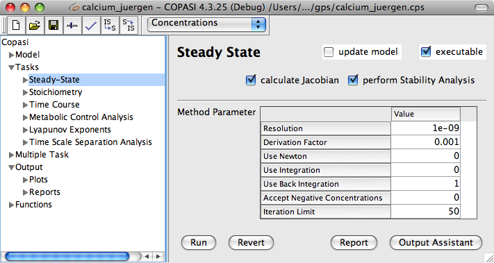
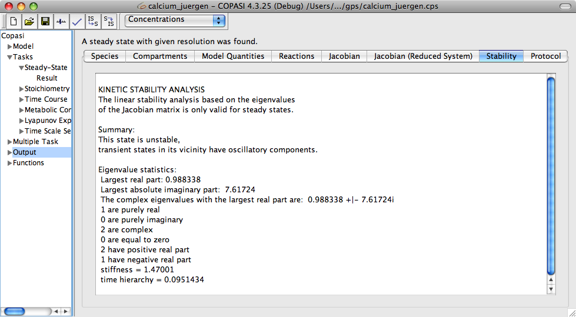

In order to run a Steady-State analysis, you have to navigate to the Task->Steady-State branch in the object tree.
|  |
| Steady-State Task Dialog |
In the dialog that appears there, you can make several settings that influence the way the Steady-State analysis is calculated. First of all, you can decide whether COPASI should calculate the Jacobian matrix and/or do a stability analysis as well by checking the corresponding check box. The executable check box is used to instruct the commandline version CopasiSE to do this task if running on the corresponding file. In the Method Parameter table you can also make several settings that influence the method for calculating the Steady-State. For a detailed description of those parameters see the corresponding methods part of this documentation. To finally run the Steady-State calculation, click on the Run button at the bottom of the screen. After the calculation, COPASI will jump to the Result widget.
The Result widget for the Steady-State calculation contains several tabs for the individual results.
The first tab contains information about the species at the Steady-State condition as well as the compartments at the second tab. The third tab shows the model quantities whereas the reactions and their fluxes are displayed at the fourth one. The display between the concentration fluxes and the particle one is depending on what you have selected on the drop down list at the tab menu. As mentioned at the very beginning this documentation, you are able to easily change the display at any time.
The fifth and the sixth tab only contain results if you told COPASI to calculate the Jacobian matrix. The fifth tab then shows the Jacobian matrix for the full system and the sixth one contains that for the reduced system. For both Jacobian matrices, the eigenvalues are also shown. The seventh tab contains the results for the stability analysis if a stability analysis was requested. The last tab shows protocol that lists the calculation steps COPASI took while trying to find a Steady-State.
|  |
| Results of the Stability Analysis |
In order to have an output from the Steady-State Task, you have to create an output definition as described in the
output section or you use the default report named
Steady-State. The default report prints a message telling whether a Steady-State was found. It also reports the concentration, concentration rate, particle number, particle number rate, and transition time of all species as well as the flux for all reactions. If they have been requested, the Jacobian matrix and the eigenvalues are also reported. The easiest way to get a customized output is probably to use the output assistant activated via the Output Assistant button. This is described in the
output assistant section. All that is left to do in order to write the output to a specific file is to connect output definition with a file. This can be achieved by clicking on the Report button. This opens a dialog that lets you connect the report of a specific task to a file on your hard disk. First we choose a report that is suitable for the Steady-State task from the drop down list at the top of the dialog. Next, we specify a file that will be used to store the report by clicking on the browse button and selecting the destination in the file dialog that opens. Per default, COPASI creates a new file or overwrites an existing file with the same name. Alternatively, you can tell COPASI to append the report to the end of an existing file by selecting the corresponding check box labeled Append at the bottom of the dialog. Once you are finished, you click on the Confirm button. If you now run the task, COPASI will write the output to the file you specified.